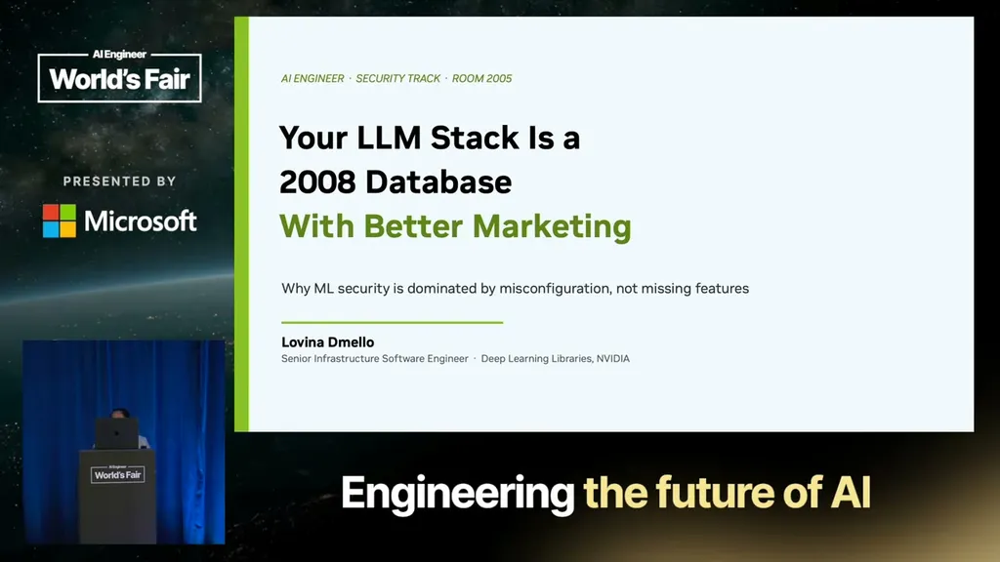
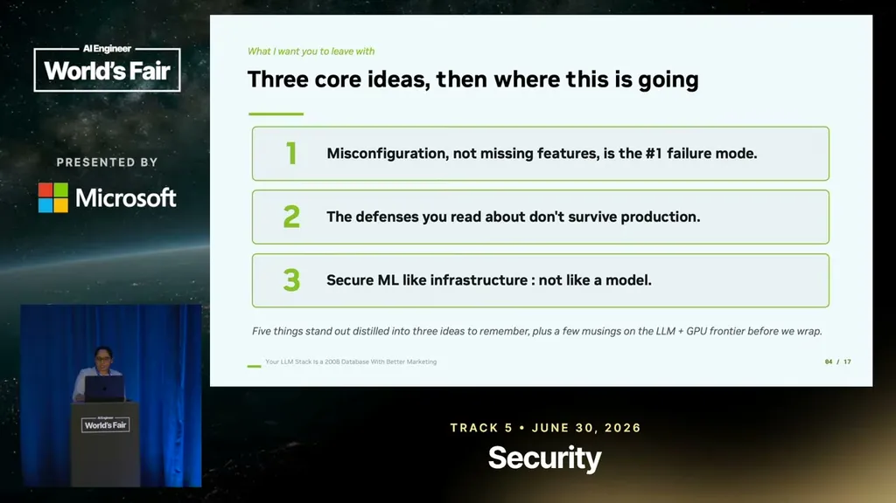
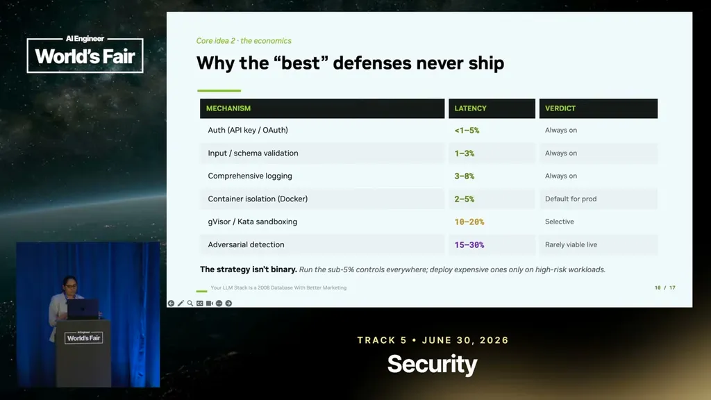
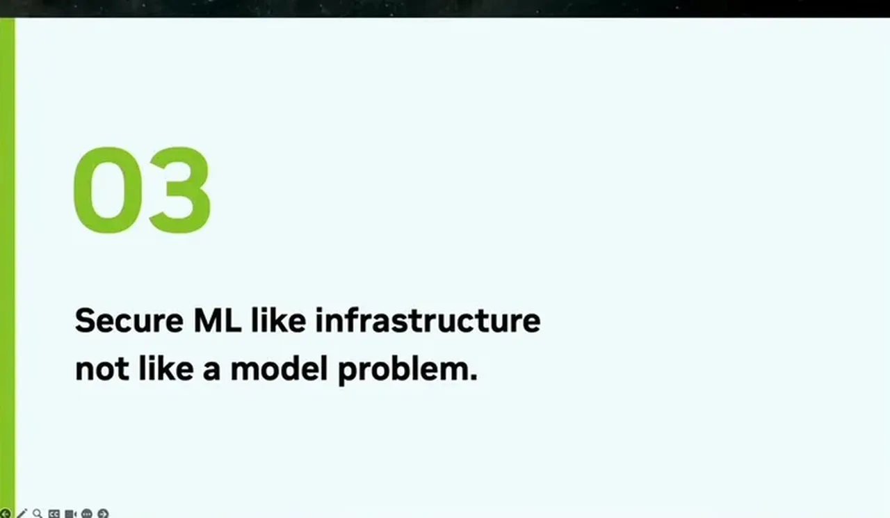
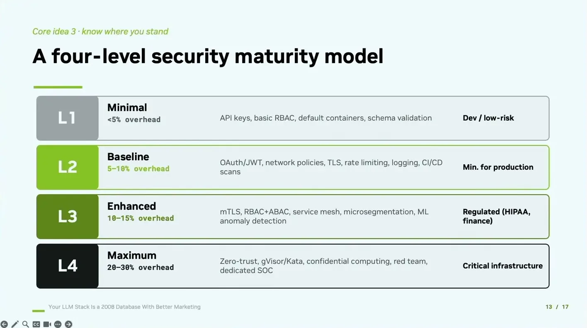

In 2023, security researchers found thousands of Ray (a distributed ML framework) clusters sitting open on the internet, with dashboards and job APIs exposed because authentication was off by default and nobody turned it on when deploying to production. The exposure was valued at over a billion dollars. The speaker's point: this was not a zero-day or a clever attack on a neural network, just a default setting left unconfigured.
“there were thousands of clusters that were sitting open on the internet”
▶ watch at 01:02“the exposure at that time was a lot. Like, it was over billion dollars”
▶ watch at 01:33
The talk's first core idea is that misconfiguration, not a missing security feature, is the number one failure mode in ML production. An audit of 50 real production ML setups found at least one critical security mistake in 78% of them, with recurring patterns: access controls left wide open (almost any account could do almost anything), no separation between system parts (a breach in one part could reach everything), and passwords or trained models sitting in reachable storage.
“So first one is misconfigurations. So lot of the times misconfigurations happen. It is not the missing features that are number one failure reason”
▶ watch at 04:43“researchers audited 50 real production setups running machine learning. In 78% of them, what the researchers found out was at least one critical security mistake”
▶ watch at 08:20“access controls were left wide open. So, what happens when an access controls are left wide open? Almost any account can do almost anything”
▶ watch at 08:51
The second core idea is that defenses that look good on paper don't survive production because every control costs latency/throughput. Basic controls (logins, input checking) cost under about 8% and should always run; heavier isolation between workloads costs 10-20% and can be applied selectively; real-time malicious-input detection is the most expensive tier, costing an estimated 15-30%, and can't be applied to every request.
“the purple ones is catching malicious input in real time. So, this is the most expensive one. Over here, it can cost like I don't know, 15 to 30%”
▶ watch at 11:28
The proposed fix is to secure ML like infrastructure, not like a model, using a maturity model mapped to the NIST AI risk management framework with four levels, each tied to an overhead budget: under 5% overhead is bare-basics/test-only, 5-10% is a real production baseline (logins, encryption, network separation, basic monitoring), and level three adds controls needed by regulated industries like healthcare and finance.
“It's a maturity model that will help us map onto the NIST AI risk management framework”
▶ watch at 14:07
The speaker flags prompt injection, RAG poisoning, GPU side-channel leakage between co-located tenants, and unvetted supply-chain downloads (models/add-ons from public sources) as open, fast-moving risk areas she treats as directional rather than settled, since existing defenses in this space are still immature.
“the model can't reliably tell the difference between our instructions and someone else's input”
▶ watch at 17:14
(ours) The title's claim does most of the persuasive work: if the breach categories really do map onto decades-old database security failures (open access, no segmentation, exposed secrets), the practical implication is that most ML security budget should go to infrastructure hygiene before exotic model-level defenses — a useful prioritization check against vendor pitches that lead with adversarial-attack tooling.
| Stance | Claim | t |
|---|---|---|
| asserts | Thousands of Ray clusters were left open on the internet with dashboards and job APIs exposed. | 01:02 |
| asserts | The value exposed by the open Ray clusters was estimated at over a billion dollars. | 01:33 |
| asserts | Misconfiguration, not a missing security feature, is the number one failure mode in ML production systems. | 04:43 |
| asserts | An audit of 50 real production ML setups found at least one critical security mistake in 78% of them. | 08:20 |
| warns | Wide-open access controls mean almost any account can do almost anything once compromised. | 08:51 |
| asserts | Real-time malicious-input detection is the most expensive defense tier, estimated to cost 15-30% overhead, making it impractical to apply to every request. | 11:28 |
| recommends | Teams should use a maturity model mapped to the NIST AI risk management framework to figure out where their security posture actually stands. | 14:07 |
| warns | Models cannot reliably distinguish their own instructions from injected input in someone else's content. | 17:14 |
| asserts | LLM production stacks should be secured with the same discipline as a 2008-era database: locked-down access, network segmentation, and encrypted data at rest. | 19:52 |
Machine-readable copy embedded in this page (script#ontology) and in the corpus ontology.